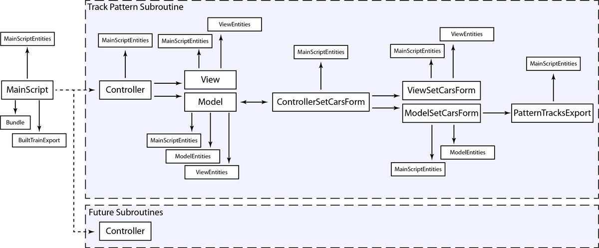
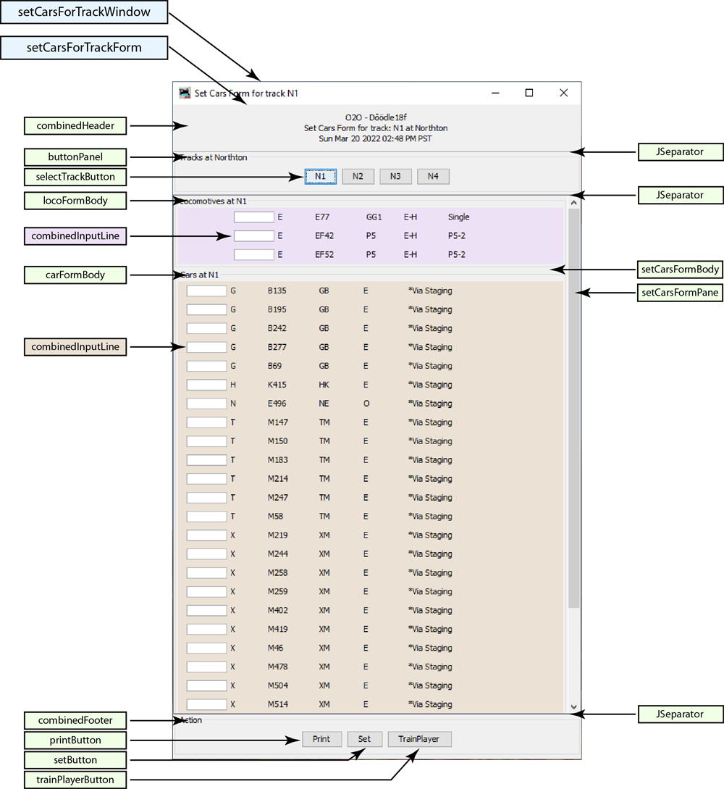

Dieses Programm ist ein Plugin für JMRI Operations Pro. Mit ihm kann der Benutzer Musterberichte für Gleise an einem Ort erstellen. Außerdem können Wagen innerhalb eines Ortes von Gleis zu Gleis verschoben werden, und wenn ein Wagen auf eine Abzweigung verschoben wird, kann optional der Fahrplan für diese Abzweigung angewendet werden. Unterstützung für meine TrainPlayer©-Skriptsuite ist ebenfalls enthalten. Die Verwendung dieses Plugins ist in der folgenden Liste von Videos dokumentiert.
Diese Videos sind in englischer Sprache aufgenommen.
Wie man dieses Plugin zu JMRI hinzufügt
So richten Sie dieses Plugin ein
Demonstration in der Industrie
Verwenden Sie dieses Plugin mit TrainPlayer©
Die folgende Tabelle zeigt die Codestruktur dieses Plugins.
">OperationsPatternScripts.MainScript.View.makePatternScriptsWindow()

OperationsPatternScripts.PatternTracksSubroutine.Controller.makeSubroutinePanel()

OperationsPatternScripts.ControllerSetCarsForm.CreatePatternReportGui.makeFrame()
">Die Musterberichte und TrainPlayer©-Exporte beginnen alle mit der Erstellung einer JSON-Datei. Die Datei wird von diesem Plugin erstellt, und im Falle der TrainPlayer©-Manifestexporte wird das JSON durch Modifizierung des von JMRI generierten Manifest-JSON erstellt. Alle JSON-Dateien werden in den Ordner jsonManifests geschrieben. Sie folgen dem abgebildeten Format:

Jedes JMRI-Profil erhält eine eigene Konfigurationsdatei mit dem Namen PatternConfig.json, die sich im Ordner operations befindet und dazu dient, benutzerdefinierte Einstellungen für jedes Profil vorzunehmen und Benutzereingaben aufzuzeichnen.
Die Beschreibung der einzelnen Elemente ist blau.
Vom Benutzer bearbeitbare Tasten sind in grüner Farbe beschrieben.
Um die grün markierten Werte wurde eine Art Schutzleiste gelegt, aber auch so kann das Plugin nicht jeden Fehler abfangen. In einigen Fällen kann das Plugin abstürzen. Wenn das passiert, drücken Sie die Schaltfläche "Restart from PatternConfig Backup" und das Plugin wird die letzte gute PatternConfig.json-Datei als neuen Ausgangspunkt verwenden. In anderen Fällen, wenn ein Fehler bei der Bearbeitung der PatternConfig.json-Datei gemacht wird, wird das Plugin sie durch die Standarddatei ersetzen und der Benutzer muss von vorne anfangen.
Im schlimmsten Fall löschen Sie einfach die Datei Pattern Config.json, und das Plugin erstellt eine neue Datei.
"CD": {
"CP": { Farbpalette
"BLANCH": { Jede dieser Farben kann geändert werden
"A": 255, Alpha-Wert
"B": 225, Blauer Wert
"D": Light grey, Vage Beschreibung
"G": 225, Grüner Wert
"R": 225 Roter Wert
},
"DUST": {
"A": 255,
"B": 218,
"D": "Light tan",
"G": 242,
"R": 252
},
"FADED": {
"A": 255,
"B": 245,
"D": "Light purple",
"G": 225,
"R": 237
},
"LICHEN": {
"A": 255,
"B": 244,
"D": "Light green",
"G": 255,
"R": 236
},
"PALE": {
"A": 255,
"B": 250,
"D": "Light blue",
"G": 243,
"R": 237
},
"PETAL": {
"A": 255,
"B": 224,
"D": "Light red",
"G": 208,
"R": 240
}
},
"locoColor": "FADED", Mit "" kann keine Farbe angegeben werden.
"carColor": "DUST",
"alertColor": "PETAL"
},
Diese nicht bearbeiten
"CP" : {
"TS" : { Übersetzungsdienstleistungen
"UD" : "useDeepL",
"UX" : "Some Other Translation Service"
},
"TC" : "UD", Übersetzungsauswahl
"BT" : ["Plugin", "Help"], Bundle-Ziele, Basisname für jedes Bundle
"AP" : true, Schaltfläche "Hinzufügen" zum Panel Pro-Rahmen, Plugin wird nicht angezeigt, ist aber dennoch aktiviert
"SE" : "utf-8", Kann in v3 erweitert werden
"SI" : { Skript Enthält
"PatternTracksSubroutine" : true, Fügen Sie dieses Unterprogramm in die Systemsteuerung ein
"TrainPlayerSubroutine" : false Verfügbar in v3
},
"PH" : 220, Standard-Panelhöhe
"PW" : 1500, Standard-Panelbreite
"PX" : 0, Nicht implementiert
"PY" : 0, Nicht implementiert
"RV" : 20220205 Revisionskontrolle
},
Diese nicht bearbeiten
"PT" : {
"AL" : [ Alle Standorte (von diesem Plugin geschrieben)
],
"PL" : "", Pattern Location (von diesem Plugin geschrieben)
"PT" : { Pattern-Tracks (geschrieben von diesem Plugin)
},
"PA" : false, Flagge "Nur Yard Tracks" (vom Benutzer gesetzt, von diesem Plugin geschrieben)
"PI" : false, Track Length Flag ignorieren (vom Benutzer gesetzt, von diesem Plugin geschrieben)
"AS" : true, Flag "Zeitplan" anwenden (vom Benutzer gesetzt, von diesem Plugin geschrieben)
"TI" : false, TrainPlayer Include flag (vom Benutzer gesetzt, von diesem Plugin geschrieben)
"PW" : 260, Musterbreite
"PH" : 16, Musterhöhe
"RM": 8, Reihenmultiplikator
"RM" : {
"DS" : "*No Waybill", Bestimmungskennzeichen
"DT" : "*Not Consigned", Ziel Gleisbezeichner
"FD" : "*Via Staging", Endzielbezeichnung
"FT" : "*Any Line", Endziel Gleisbezeichner
"SL": [ Lokomotiven sortieren
"Model"
],
"SC": [ Autos sortieren
"Load Type",
"FD&Track"
],
"AW": { Attribut Breite
"Input": 6,
"Model": 5,
"Road" : 5,
"Number" : 7,
"Type" : 6,
"Length" : 7,
"Weight" : 7,
"Load" : 6,
"Load Type" : 5,
"Loco Type" : 18,
"Owner" : 20,
"Consist" : 8,
"Hazardous" : 10,
"Color" : 6,
"Kernel" : 7,
"Kernel Size" : 12,
"Owner" : 6,
"Track" : 6,
"Location" : 9,
"Destination" : 15,
"Dest&Track" : 30,
"Final Dest" : 11,
"FD&Track" : 21,
"Comment" : 15,
"SetOut Msg" : 12,
"PickUp Msg" : 12,
"RWE" : 10,
" " : 0
}
},